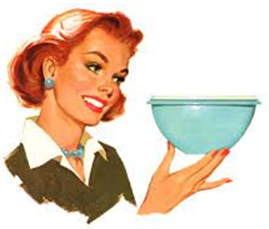

|
|
|
|
| Histoire du
plastique |
|
|
|
|
|
|
|
Née
il y a une cinquantaine d'années, la Plasturgie est une
industrie jeune
comparée aux industries pluriséculaires de la
fonte, de l'acier, du verre…
Le
mot plastique vient du grec plastikos qui signifie apte au moulage.
|
|
|
1. |
Tout est parti d'une boule de billard |
|
|
|
|
En
1869 a été créée,
à partir du camphre et de la cellulose, la
première matière
plastique : le nitrate de cellulose ou
celluloid.
C’était le fruit de
l’invention des frères Hyatt, imprimeurs de
l’état de New York, qui, à
l’occasion d’un concours, cherchaient un substitut
à l’ivoire dans la
fabrication des boules de billard. |
Cette
première
économie des ressources de la
nature a été suivie de bien d’autres.
Ainsi nos forêts bénéficient-elles
aujourd’hui du remplacement du papier par le plastique dans
la fabrication des
films et feuilles pour l’emballage.
En 1884 apparaissait
le premier fil artificiel, en
acétate de
cellulose. Mais c’est de la première
moitié du XXème siècle que datent le
développement de la chimie de synthèse et la
découverte des matières
plastiques.
De 1930 à 1940,
les
grands laboratoires de recherche allemands et américains
mettent au point les
grands thermoplastiques :
-
polychlorure de vinyle
- polystyrène
- polyéthylène
- polyamide…
Mais
aussi des produits comme le polyméthacrylate de
méthyle (plexiglas).
|
|
|
2. |
L'apparition d'une nouvelle industrie |
|
|
|
|
La
découverte des matériaux plastiques et leurs
possibilités de mise au point de
produits originaux ont
provoqué
l’éclosion
de techniques spécifiques de
transformation.
Une
industrie nouvelle a
remplacé
l’artisanat d’hier consacré aux peignes,
aux aiguilles à tricoter…
À partir
de la Seconde Guerre
mondiale, la recherche s’est
élargie à d’autres pays qui, avec
d’autres découvertes importantes,
développent continuellement de nouvelles
matières et applications.
|
|
L’association
de
plusieurs matériaux autorise
également des avancées technologiques. Dans le
cas des composites, une matrice
plastique est associée à des fibres (verre,
carbone…) qui la chargent et la
renforcent.
|
|
|
Il
est également possible d’associer
différentes matières plastiques
entre elles ou avec d’autres matériaux tels que le
papier, l’aluminium… ce sont
des complexes.
Avec les
années 50, la consommation de
masse et la diversification crée
une explosion des demandes et confortent l’essor de cette
industrie.
|
 |
|
Le choc
pétrolier de 1973 marque
un tournant dans l’histoire de la consommation en
général et des plastiques en
particulier. De matières de substitution jetables et bas de
gamme, ils vont
devenir de plus en plus souvent des matériaux
sophistiqués aux propriétés
spécifiques et irremplaçables.
|
|
|
|
3. |
Les matériaux du XXI
ème siècle |
|
|
|
|
Aujourd’hui
les polymères sont des produits de haute technologie
capables de prouesses
inégalées dans tous les domaines de
santé, bâtiment, automobile,
aérospatiale,
emballage, décoration, bureautique, sport…
Plus
économiques, performants et
malléables, l’imagination est leur seule limite.
|
|
Chaque
jour, les chercheurs et les scientifiques continuent
d’élargir les frontières
du savoir, des nanotechnologies à la médecine,
dans tous les domaines où les
plastiques peuvent nous aider.
|
|
|
|
|
|
| Année |
Découvertes |
| 1839 |
Découverte
de la vulcanisation, chauffage
prolongé avec du soufre rendant le caoutchouc naturel
beaucoup plus résistant à la chaleur, tout en lui
conservant son élasticité aux basses
températures.
Charles
Goodyear
(U.S.A.) |
| 1862 |
Fabrication
de l’un des plus anciens plastiques artificiels, la
Parkésine, à
partir de cellulose des végétaux.
Alexander
Parkes (Angleterre) |
| 1869 |
Fabrication
d’un matériau de substitut à
l’ivoire d'éléphant : le
celluloïd. Longtemps utilisé pour la
fabrication des balles de tennis de table et des pellicules
cinématographique. Très inflammable, il n'est
quasiment plus utilisé aujourd'hui.
John
Hyatt (U.S.A.) |
| 1884 |
Premier
fil artificiel à partir d’acétate de
cellulose: viscose ou « soie artificielle ».
Remplace
bas et sous-vêtements faits alors en coton et en laine.
Hilaire
de Chardonnet (France) |
| 1889 |
Fabrication
de la « pierre de lait
» par durcissement de la caséine du lait avec du
formol.
Le
chimiste Jean-Jacques Trillat
(France) |
| 1897 |
Fabrication
de la Galalithe> à partir
de caséine. Plus dure que la corne, plus brillante que
l’os, colorable, elle sera très
utilisée : manches de couteaux, boules de billard, boutons,
bijoux fantaisie, stylos…
Wilhelm
Krische (Allemagne)
et le chimiste Adolf Spitteler Autriche) |
| 1907 |
Fabrication
du plus ancien plastique synthétique, la
bakélite (phénoplaste
composé de phénol-formaldéhyde) aux
nombreuses propriétés mais aux couleurs opaques,
ternes et brunâtres. Utilisée à
l'époque pour les boîtiers de
téléphone, poignées de casserole,
prises électriques, cendriers,…
Léo
Baekeland (Belge) |
| 1908 |
Fabrication
du premier matériau souple et parfaitement transparent : la
cellophane.
Le
chimiste Jacques Edwin Brandenberger
(Suisse) |
| 1926 |
Départ
du succès commercial du PVC
(polychlorure de vinyle),
fabriqué à partir de 57 % de sel et de 43 % de
pétrole grâce à des additifs qui le
rendent plus plastique.
Waldo
Semon (U.S.A.) |
| 1927 |
Fabrication
de PMMA (polyméthacrylate
de méthyle) remplaçant le verre pour
des vitres incassables.
Otto
Röhm (Allemagne) |
| 1930 |
Débuts
de la fabrication industrielle du Polystyrène.
(Allemagne
et U.S.A.) |
| 1930 |
les
premières presses à injecter démarrent
à Oyonnax.
(France) |
| 1933 |
Invention
du Polyéthylène basse densité (PEBD).
Utilisé comme isolant
électrique performant pour protéger les
câbles des radars.
Les ingénieurs Eric
Fawcett et Reginald Gibson (Angleterre) |
| 1935 |
Polyamide,
fibre annoncée comme « aussi solide que l'acier,
aussi fine
que la toile d'araignée, et d'un magnifique éclat
» Du pont de Nemours. Ce
plastique présente un coefficient de friction faible et fait
ses preuves dans
les parachutes des G.I. lors du débarquement de 45. Il sera
utilisé dans la
confection de bas.
(U.S.A.
Du pont de Nemours) |
| 1937 |
Premiers
polyuréthanes, utilisés comme
adhésifs, « mousses » pour
matelas et coussins, sièges d'automobile,
…
Chimiste
Otto Bayer (Allemagne
IG Farben) |
| 1938 |
Polytétrafluoréthylène
(Téflon), isolant avec excellente résistance
chimique et thermique (jusqu'à 250 °C avec pointes
possibles à 300 °C). Sert
dans l'industrie nucléaire militaire puis recouvre vers 1960
les poêles à frire
(pouvoir antiadhésif) et est présent dans des
tissus techniques (goretex,…).
Chimiste
Roy Plunkett (U.S.A. Du
Pont de Nemours) |
| 1940
1941 |
fabrication
du silicone et du Caoutchouc synthétique qui
répond aux
besoins en matières premières des pays en guerre
pendant la seconde guerre
mondiale.
(Allemagne
et U.S.A.) |
| 1949 |
Les
plastiques « mélamine-formol, MF »
(Formica) découverts en 1941
envahissent les cuisines et le mobilier. |
| 1950 |
Développement
du polyester. Le plus connu est le
polytéréphtalate
d'éthylène : PET, PETE.
John
Rex Whinfield et James Tennant Dickson
Angleterreet U.S.A. Du Pont de Nemours) |
| 1953 |
Invention
du polyéthylène haute densité (PEHD)
par polymérisation de
l'éthylène sous pression
modérée.
Chimiste
Karl Ziegler, prix Nobel de chimie en
1963 (Allemagne) |
| 1954 |
Invention
du polypropylène PP.
Chimiste
Giulio Natta, prix Nobel de chimie en 1963
(Italie) |
| 1958 |
Lego
lance sa fameuse brique emboîtable toujours
utilisée aujourd’hui. |
| 1960 |
Le
premier salon des plastiques se tient à Oyonnax en France. |
| 1961 |
Invention
du
polyuréthane thermoplastique Estane.
(U.S.A. BF
Goodrich
aujourd’hui Lubrizol) |
| 1965 |
Invention
du kevlar. Le polyamide
léger et particulièrement résistant
à la déchirure, aux chocs, au feu et à
la corrosion.
(Stephanie
Kwolek et H. Blades
U.S.A. Du
Pont de Nemours) |
| 1989 |
Le
mot Plasturgie apparaît dans le " Petit Larousse ". |
| 1990 |
ABS
(Acrylonitrile Butadiène
Styrène) qui remplace peu à peu les
« mélamine-formol ». Très
utilisé en habillage d'équipements
électroménagers, jouets rigides, enjoliveurs,
accessoires de salles de bains et dans l'industrie. |
| 2000 |
3
900 entreprises de Plasturgie sont répertoriées
en France. |
|
|
|
|
|
|
|
|
|
 |
|